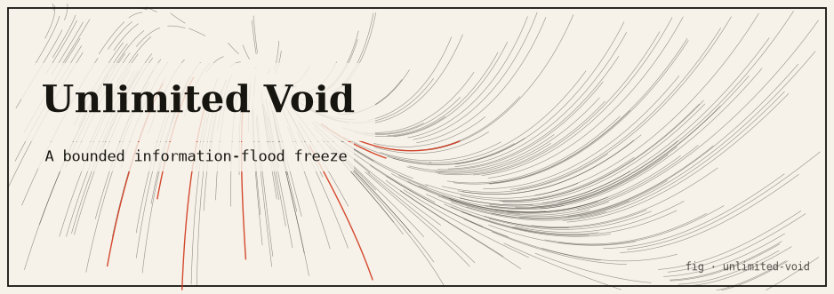

unlimited-void
Gojo’s Unlimited Void modeled as a container-runtime primitive: isolates a process in a simulated void of infinite information, pinning it with a massive constraint weight over a sandboxed process table.

The idea
Unlimited Void floods the target’s sensory input with an infinite stream of information, paralyzing them. In domain_expansion terms (see that package), it is the extreme case where one cell is pinned with weight 1×10⁶, producing rigidity ≈1004.6 — astronomically higher than any normal Domain.
This package implements Unlimited Void as a container-runtime isolation primitive over a simulated in-memory process table. The “void” goroutine floods the target process’s channel with messages at a rate it cannot consume, starving it of CPU time via backpressure. All process table entries are in-memory structs; no real OS processes are created.
How it works
- A simulated process table holds goroutine-backed worker entries.
- Activating Unlimited Void on a target spawns a flood goroutine that sends to the target’s input channel at maximum rate with no throttle.
- The target’s select loop is overwhelmed and unable to make progress on its work queue — effective paralysis through information overload.
- A cancel context allows the void to be lifted, restoring the target’s channel to normal backpressure.
- Containment is verified: the void goroutine cannot touch processes outside the sandbox table.
Run it
git clone https://github.com/caelum0x/awesome-mad-projects.git cd unlimited-void go test ./... go run . # Process 'target-A' work rate: 1200 ops/sec # Activating Unlimited Void on target-A... # Process 'target-A' work rate: 0 ops/sec (paralysed) # Other processes unaffected: target-B 1198 ops/sec # Lifting void... target-A restored: 1201 ops/sec